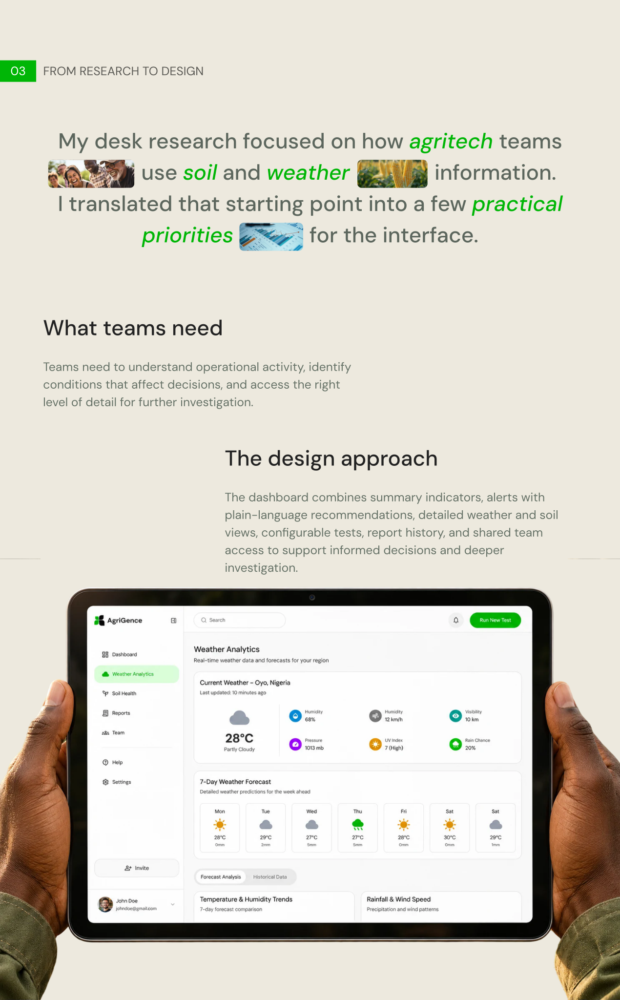
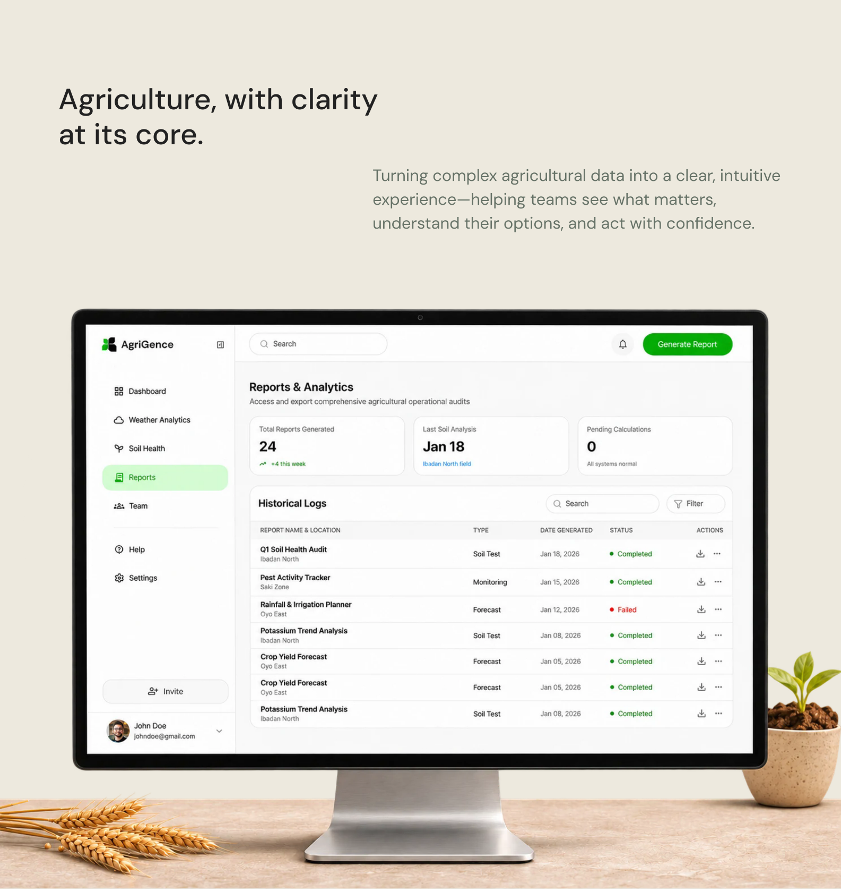
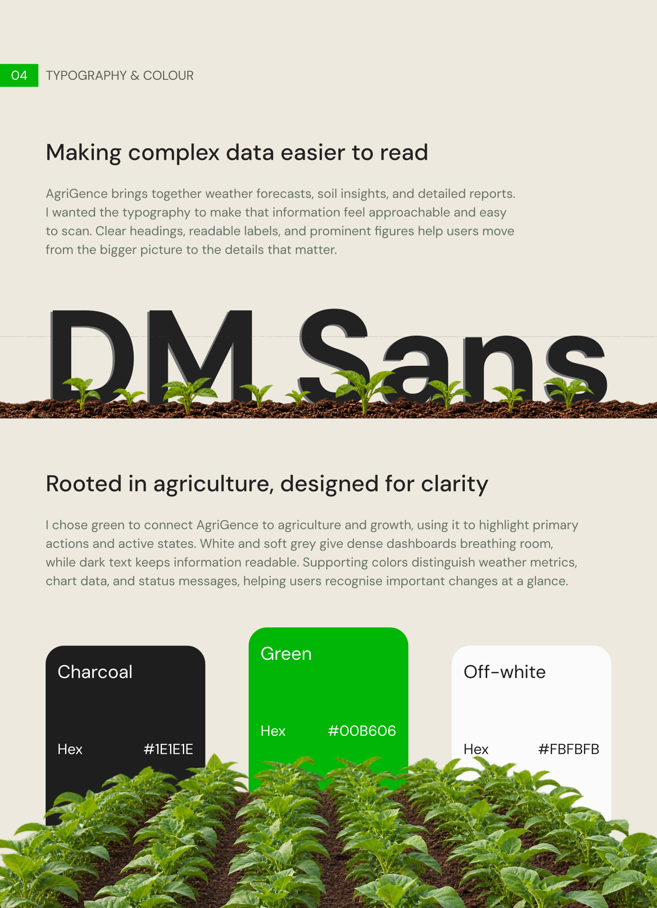
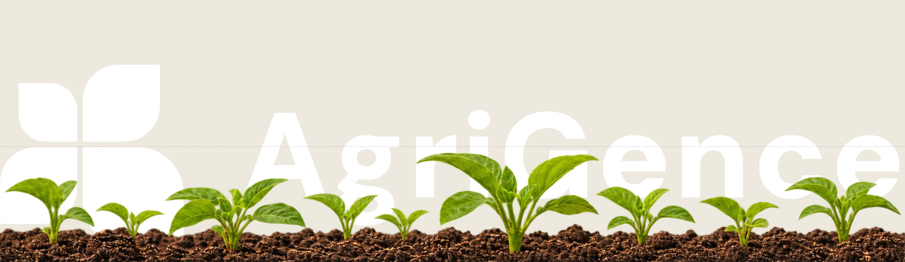
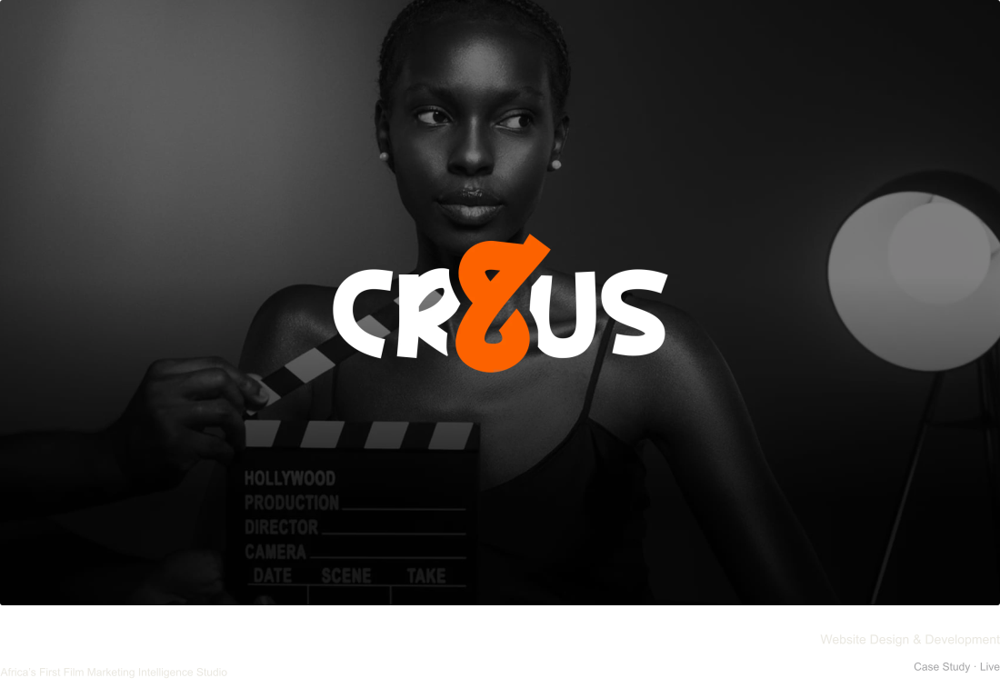
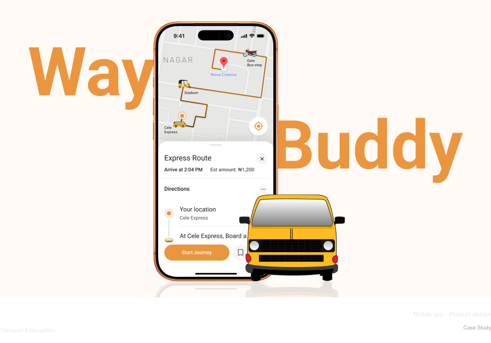

Africa’s First Film Marketing Intelligence Studio
Website Design & Development
Case Study · Live
Islamic companion · AI
Mobile app · Product design
Live
Fintech
Website · UI/UX
Case Study

Transport & Navigation
AI · Productivity
Business Intelligence · B2B · SaaS
Dashboard · Website
Web 3